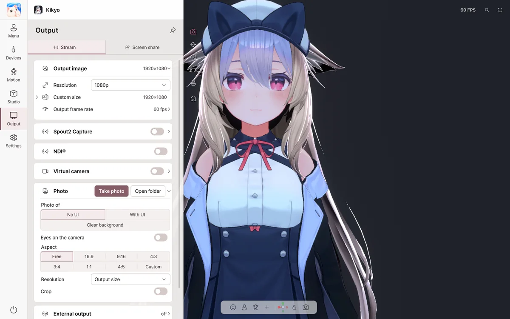
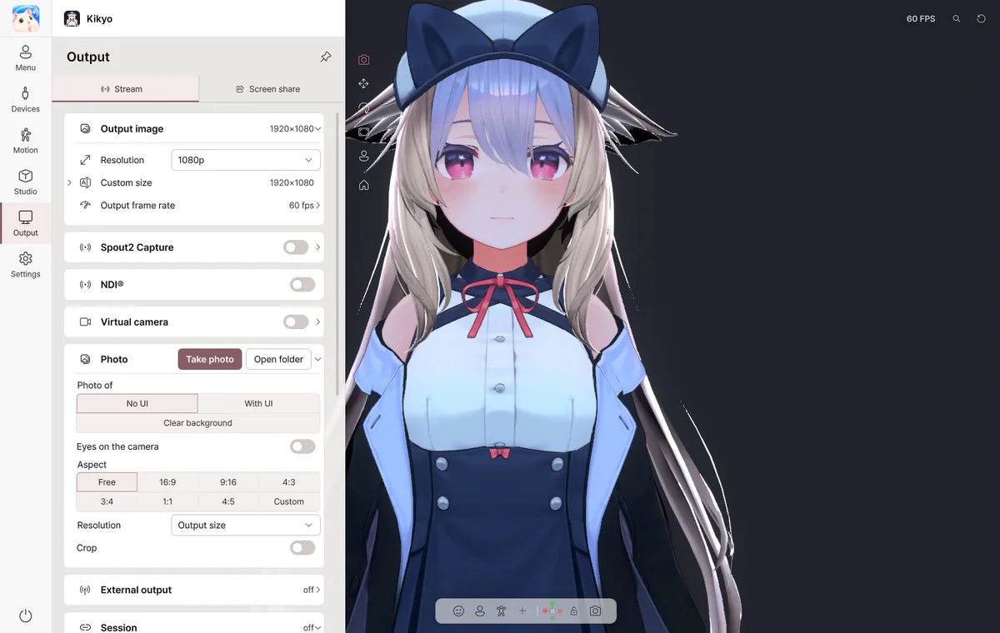
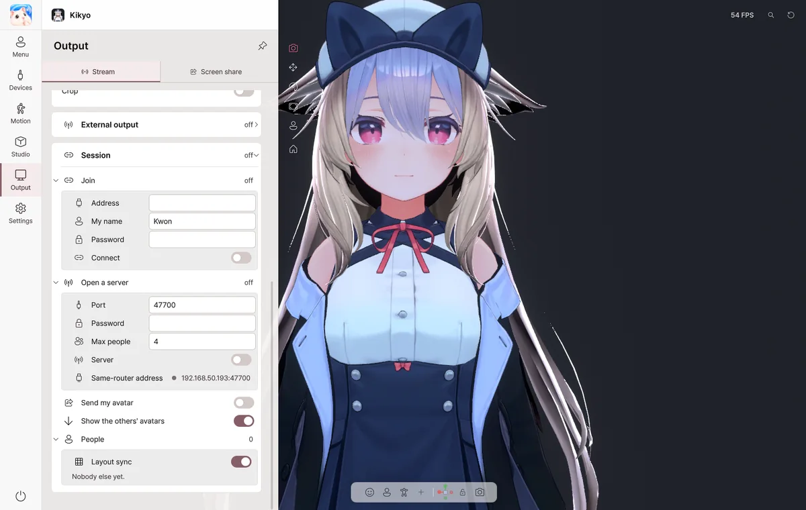
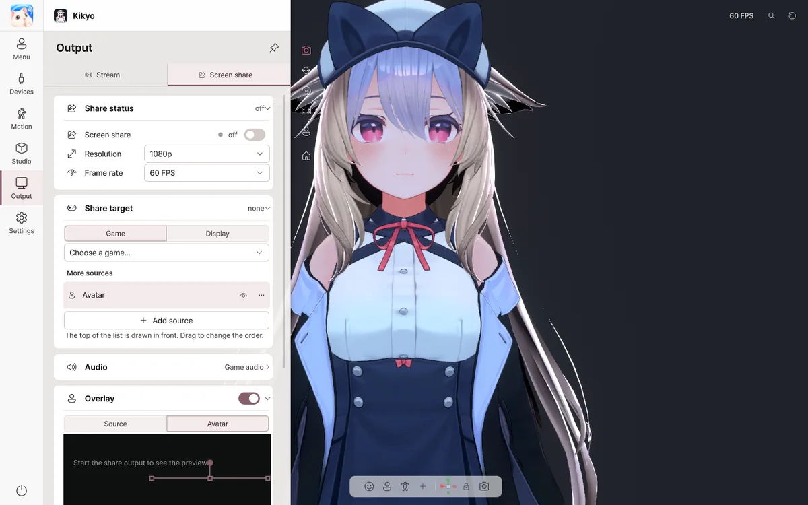
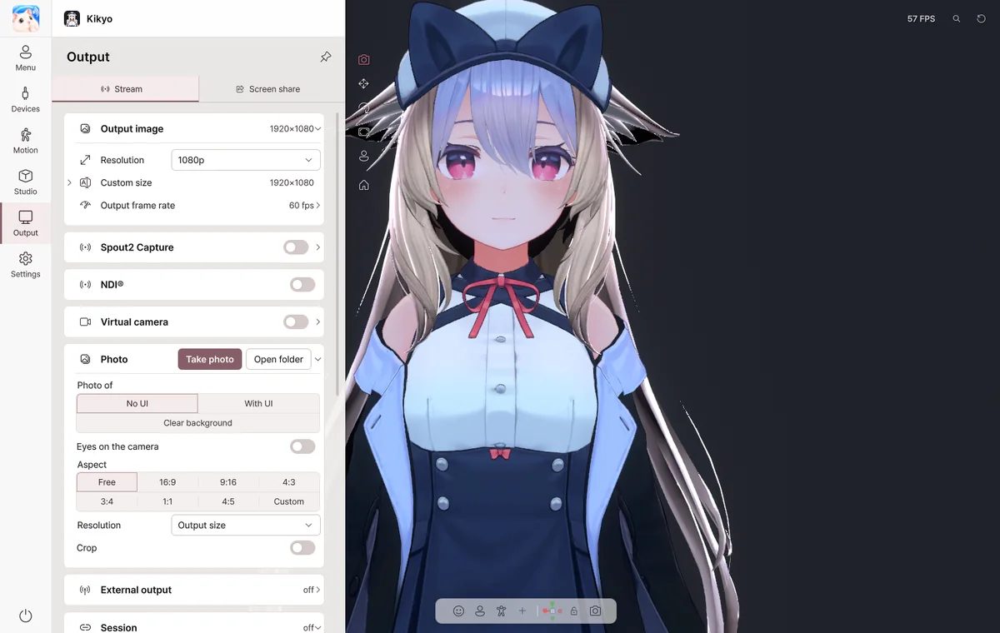
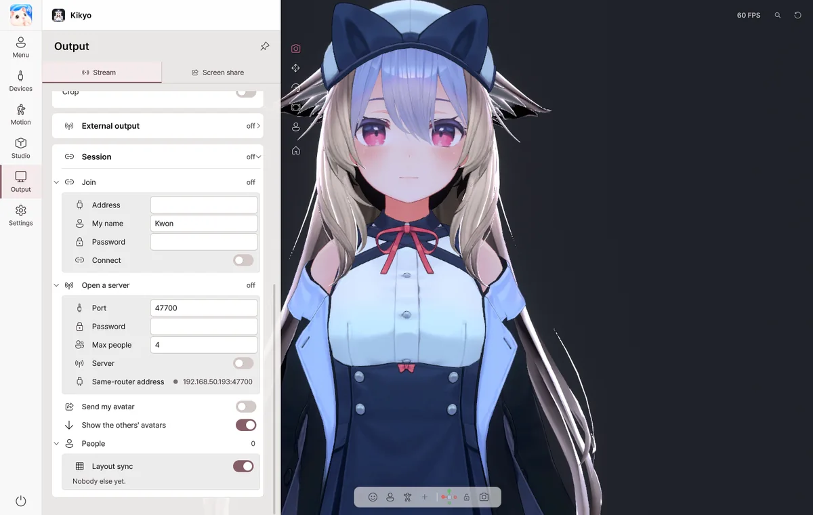

Output
This guide explains which image goes where, how each control changes that image, and what another person's computer actually receives. If a studio camera is on air, that camera is sent to OBS while the Avatar Live app window remains your freely movable scene view. To stream a character with an alpha background, use Spout2 or NDI instead of capturing the application window.

| Goal | Method | Availability |
|---|---|---|
| Transparent avatar in OBS on the same Windows PC | Spout2 | Basic and Pro |
| Avatar to OBS/monitor on another PC on the network | NDI® | Basic and Pro |
| Avatar in a Discord/Zoom camera list | Virtual camera | Basic and Pro |
| Combine a game/desktop and avatar for Discord | Screen Share | Basic; some extra sources are Pro |
| Send multiple studio cameras as separately named OBS feeds | Per-camera Spout2 | Pro, up to three independent senders |
| Join another person with live avatars, poses and facial motion | Remote session | Pro |
| Save the broadcast to an MP4 video | Recording | Pro |
Output resolution and frame rate
- Resolution controls the number of pixels received by OBS/NDI/Spout2. 720p uses less GPU/network bandwidth but softens fine edges; 1080p is a practical starting point; 1440p/4K improve detail but consume more resources. Basic max 1920×1080; Pro max 3840×2160.
- FPS sets the maximum number of images sent each second. 30fps saves work at the cost of choppier motion; 60fps makes fingers, gestures and camera pans smoother. Output is capped at 60fps and cannot exceed the app's actual rendering throughput.
- On-air camera changes what an external receiver sees. Scene view on air means moving your editing camera also moves your broadcast. Use a fixed Studio camera (Pro) to keep the audience's picture unchanged while working.
- Transparent background requires selecting transparent in Studio and a receiver that supports alpha. Window capture and the standard virtual camera do not transmit transparency in exactly the same manner.
Spout2 → OBS (same PC)

Avatar Live transmits Spout2, but OBS needs its own Spout2 receiver plugin.
- Close OBS. Download the Windows installer from Off World Live's OBS Spout2 releases. Read the project's installation instructions and check the OBS installation directory.
- Restart OBS. Choose Sources → + → Spout2 Capture. If it is missing, check the plugin version and installation path and restart OBS again.
- In Avatar Live, enable Output → Broadcast → Spout2. The default sender name is Avatar Live. If you rename it, click Apply.
- In OBS Spout2 Capture, select the sender Avatar Live (or your custom name). Arrange and scale this source in your OBS scene.
- To remove the backdrop, select Studio → Background → Transparent in Avatar Live and enable the receiver's transparency option (Composite with alpha, where the installed plugin exposes it). Check the final OBS composition, not just the app window.
Sender name affects which source OBS finds; renaming it requires changing the source dropdown in OBS too. Send alpha should normally stay enabled for chroma-free VTuber overlays. Spout2 is local to a Windows PC: to connect different computers use NDI. If the image stutters, reduce output resolution/FPS and test GPU and plugin compatibility.
Per-camera Spout2 (Pro) provides separate feeds for individual studio cameras, independent of the current on-air camera, with up to three additional senders. Each requires rendering work: disable unused cameras before a demanding stream.
Third-party notice: The OBS Spout2 plugin is independently maintained by Off World Live, not included with Avatar Live and subject to the project's GPL v2 terms. Avatar Live is not its developer or licensor.
NDI® → OBS or another computer (Basic supported)
NDI® can send video over a network and works in Basic as well as Pro. The sending and receiving devices must be on a network that lets them communicate; guest Wi-Fi/client isolation may prevent discovery.

- Enable Output → Broadcast → NDI® in Avatar Live. The sender appears as Avatar Live. Its video size and FPS follow the Output settings.
- Close OBS. Install the DistroAV plugin (formerly OBS-NDI) from its official releases, including an NDI Runtime where its installer/instructions require one. Check your OBS version; remove old OBS-NDI if its installation conflicts with DistroAV.
- Open OBS → Sources → + → NDI Source (the label may vary by plugin version). Choose the Avatar Live NDI sender.
- If the receiver supports NDI transparency, it can composite the character above a game/background. If the feed is missing, check the app's NDI switch, firewall, the connection between both PCs, and the plugin/runtime first.
- For a direct test without OBS, install the official NDI Tools and select the feed in Studio Monitor. NDI Tools is not bundled with Avatar Live.
NDI trademark and SDK redistribution information
- NDI® is a registered trademark of Vizrt NDI AB. See the official NDI website. Avatar Live is not an official NDI product or an endorsement by the NDI owners.
- The Avatar Live distribution is designed to ship an unmodified NDI SDK 6.3.2 redistributable runtime with the corresponding Processing.NDI.Lib.Licenses.txt notice. The applicable terms are those of the NDI SDK licensing page and the full license file distributed beside the DLL.
- The NDI SDK, NDI Tools and DistroAV are separate technologies/distributions with separate legal conditions. SDK redistribution permission does not automatically grant a right to redistribute NDI Tools or modify their packages. Users obtain third-party apps directly from their official distributors.
- NDI is a video transmission protocol, not an end-to-end encrypted remote session. Use it on a network you trust and do not expose sensitive feeds on an untrusted public network.
Virtual camera and still photos
To appear in Discord or Zoom's camera picker, install Avatar Live Camera using the app's Install virtual camera control. Windows administrator permission can be needed for registration. If the button does not respond, check VirtualCamera/Install.bat in the installed app folder or restart the application. Then enable the virtual-camera output and select Avatar Live Camera in the other app. Some apps discover cameras only on startup, so fully restart Discord/Zoom if needed. The virtual camera supports up to 1920×1080 at 30fps and does not provide transparency; use Spout2/NDI for alpha.
Photos save PNG images. Crop, aspect ratio and resolution change the exported rectangle and pixel count; use Transparent background to preserve an alpha PNG when supported.
Discord screen sharing and VB-CABLE

- Under Output → Screen Share, select a Game or Display. Select the running game from the picker if needed.
- Position and size the avatar overlay, then turn on Screen Share.
- In Discord, choose Share Screen → Applications → Avatar Live Share Output, not the ordinary Avatar Live window. Enable audio sharing if desired.
- If the capture is black, try a borderless-windowed rather than exclusive-fullscreen game. If the app falls back to capturing a display, other windows on that monitor can become visible: check for private notifications.
Additional sources (Pro) add more windows or displays to the composite. Source order controls which picture covers another. Audio mixing offers game sound, desktop sound, chosen apps or none. A per-app volume 0–200% only changes the volume in the broadcast mix: 0 mutes, 100% preserves level, 200% amplifies and may distort. It does not change the normal Windows playback slider.
If a separate virtual audio device is not present, a warning may offer to install VB-Audio VB-CABLE with consent and Windows admin approval. Download/help: VB-Audio official page. Ensure your headset remains the default Windows listening device afterwards.
VB-CABLE license: VB-CABLE is donationware by VB-Audio Software. The original distributor permits conditional redistribution with attribution and the opportunity to donate or pay. Read the official licensing policy. Avatar Live does not grant or replace VB-Audio's third-party license.
Remote session (Pro): join people from different PCs

A participant's own PC runs the built-in session server; there is no centrally hosted Avatar Live service storing session avatars. Sessions synchronize pose, fingers, expression, gaze, participant status and optionally consented avatar data, rather than sharing a flat screen. A remote person is rendered as an avatar in your own scene.
Host a session
- In Output → Broadcast → Session → Open a server, set Port (default 47700), a strong Password, and Max people (includes the host; default 4, selectable 2–16).
- Turn the Server switch on. The host's in-app server starts and the host joins their own room.
- Share the same-router/LAN IP address shown by the app with your friend, such as 192.168.0.25:47700 (example only; use the actual host IP).
- The friend chooses Output → Broadcast → Session → Join, enters Address, My name and password, and turns Connect on.
- To leave, switch Connect off. When the host switches Server off, the room closes for everyone.
What remote avatar controls actually change

- Receive other avatars allows participants to appear in the scene. When a person has not agreed to share avatar data, or you do not own the same asset, choose a stand-in avatar locally; their live pose can still be applied to an available model.
- Send my avatar data is off by default. It requires separate consent and confirmation that the avatar, costume, prop and texture licenses allow transmission and temporary storage. VRM assets with redistribution prohibited are not transmitted.
- Layout sync (on by default) applies the host's placement plus each participant's own position adjustment. Turn it off to use your local arrangement. Editing a remote person's position/rotation/scale on your screen need not change the actor on someone else's computer.
- Lock places (host) restricts participants from changing their own position, rotation or scale. Use it for a group photo or a fixed stage arrangement.
- Look at participant / Look at camera shares the intended target; each receiving PC resolves the corresponding participant's face or its own camera locally. This is why gaze can look natural even if participants arrange remote actors differently.
- If the same licensed VRM is already installed on the receiving PC, put it in the avatar library's Vrm folder and choose Find again. If unavailable or redistribution is prohibited, use a permitted substitute instead.
- A departed participant may remain displayed briefly as Left with their last pose until removed. Do not confuse this with a disconnected stream still actively receiving motion.
Session data, encryption, temporary cache and asset licenses
There is no central Avatar Live storage server. The host's PC forwards communications. However, encrypted avatar-transfer cache files can temporarily exist on the host and receiving PCs during a session. This distinction matters for accurate privacy statements.
- Consented avatar data is transferred in AES-256-GCM encrypted chunks, and receivers store ciphertext plus authentication tags in a session-only temporary cache. The host can also hold encrypted relay data while forwarding it to late joiners. The app does not provide a general-purpose original-asset export from this cache.
- Keys are intended to be discarded after leaving, ending a session or disabling sharing; temporary cache deletion is attempted when the session ends, with crash recovery and cleanup on next launch. This is not a promise of physical secure erasure from all disks or a guarantee that users with OS-level access cannot copy encrypted cache bytes.
- Live poses, expressions and other control messages travel separately over TCP/UDP. The code does not establish that these packets receive the same end-to-end AES-GCM encryption as the optional avatar-data transfer. Do not interpret the entire session as end-to-end encrypted. Avoid using it for confidential material on networks you do not trust.
- Room password authentication uses an HMAC-SHA256 challenge rather than sending the raw password directly, but it does not itself encrypt all pose traffic. Use a strong password and share the host address only with trusted participants.
- Avatar, costume, texture and prop usage rights belong to their respective creators. Temporary encrypted sharing does not override restrictions on redistribution, transfer, commercial use or public performance. Verify each asset's own terms and obtain permission where necessary. Do not try to extract another participant's original assets.
- A session between two actual PCs has been tested. Router models, security environments, virtual network adapters and avatar dependencies can still affect whether any particular Internet route works.
Troubleshooting: router port forwarding and firewall
- On the host PC, find its IPv4 address in Windows network properties, e.g. 192.168.0.25. Reserve this address with your router's DHCP reservation if it changes.
- Open your router's administration page and locate Port Forwarding / Virtual Server. Forward external TCP 47700 and UDP 47700 → host LAN IPv4, internal port 47700. Some routers require two separate forwarding rules. If the app uses a different port, substitute it consistently.
- In Windows Security → Firewall → Allow an app, permit Avatar Live for the network. For tighter control, make inbound TCP and UDP rules only for the host PC and the chosen port. Do not turn off the entire firewall or enable all open ports.
- Check that your router has a genuinely public WAN IP. Addresses 10.x.x.x, 172.16–31.x.x, 192.168.x.x or 100.64–127.x.x indicate another router/NAT or CGNAT, so your own forwarding alone may not be sufficient. Ask the ISP about a public IP or configure the upstream router if necessary.
- Give friends the public-IP:47700 address. 203.0.113.10:47700 is documentation-only, not a real host. Test from a different Internet network: some routers cannot reach their own public address from inside the LAN due to missing NAT loopback.
- Once the event ends, stop the room and remove an unnecessary temporary port-forwarding rule. Do not post the password publicly.
If connecting fails: verify server on → same protocol → address/password → LAN connection → Windows firewall → TCP and UDP forwarding → WAN/CGNAT → external-network test. Rejected addresses, incorrect passwords, participant limits, kicks and server closure have separate status notices in the Session card.
Troubleshooting quick reference
- Spout2 Capture missing in OBS: check installation into OBS, plugin compatibility and a full OBS restart.
- NDI Source missing: check DistroAV, NDI Runtime, OBS version and duplicates of the older OBS-NDI plugin.
- NDI sender not found: verify NDI switch, both PCs' connectivity and firewall; test with NDI Studio Monitor.
- Session works only on LAN: examine TCP+UDP forwarding, changing host LAN address and WAN/CGNAT.
- Friend appears as a substitute: check Send/Receive consent, the asset license and locally available avatar/VRM.
- Stream is slow: reduce FPS/resolution, unnecessary per-camera senders, demanding effects or bandwidth use.